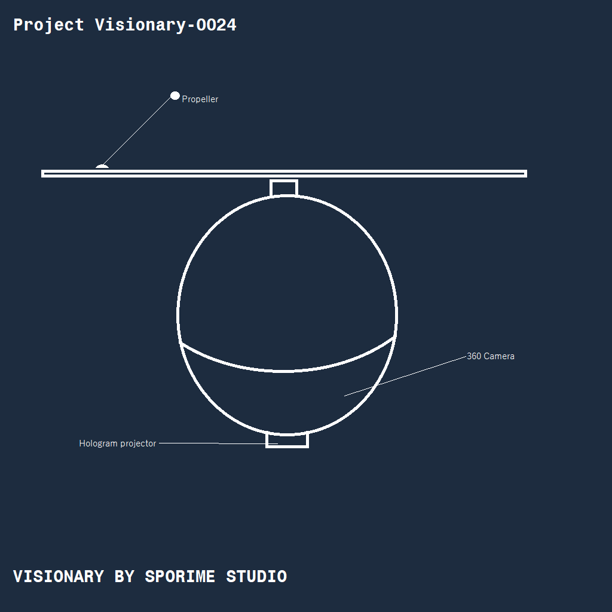

The Visionary Node
I started this project in 2025 to evolve communication from 2D screens to 3D space. The "Visionary" isn't just a drone; it's a Holographic Telepresence Node.
My aim is to create a device that maintains a constant flight-path relative to the user. When a call is attended, the node deploys its sensor suite to begin 360° capture.

Volumetric Transmission
The device operates on a peer-to-peer mesh. Device A captures the user's volumetric data and streams it to Device B. Simultaneously, Device B projects the holographic character of the caller in real-time.
By utilizing Ultra-Low Latency (ULL) protocols, the "delay" is reduced to sub-millisecond levels, making the interaction feel as natural as standing in the same room.
Final thoughts: This project is currently on hold.